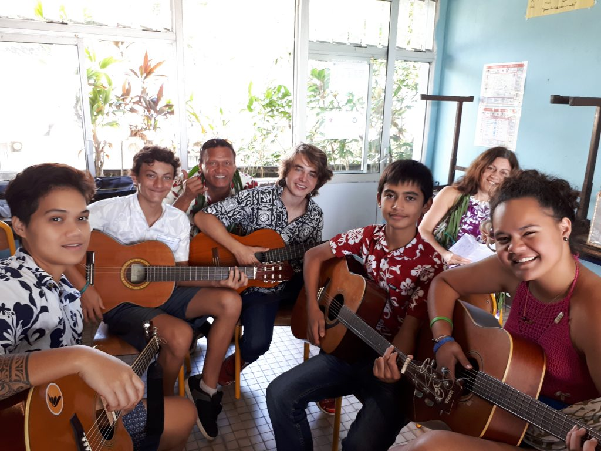

I studied the whole middle school to senior year in high school in Tahiti. I went to Mahina middle school and there, I really liked physics and mathematics. I also started a programming club because I was learning HTML on my own and I figured out that I could teach it to other students. It took place at lunch time every Thursdays and we were around 10 each time. Sadly, it didn’t work as planned because I was only in Grade 8. Even if it only lasted a year, I got a taste of what being a teacher is like and reinforced my knowledge in computer science. 
Fast forward to Grade 9 and I took the Aeronautical initiation certificate (Brevet d’Initiation Aéronautique in French) and I was awarded with high honors, at the same time I also passed the equivalent for the GSCE with highest honors, which I was very proud of.
That year I flew two times over Tahiti with the course I took in aeronautics.
This choice was hard as I didn’t have as much information about the different courses I could take in Tahiti because they are all located in France (at least those that interested me). So I basically had the choice to go anywhere in France and I chose Lannion because it’s a relatively small city close to the sea (feels much better when you lived a long time close to it). And the choice for this particular course was because it’s much more practical than just going to the university and that’s what I was looking for in my higher studies.
created with
Website Builder Software .